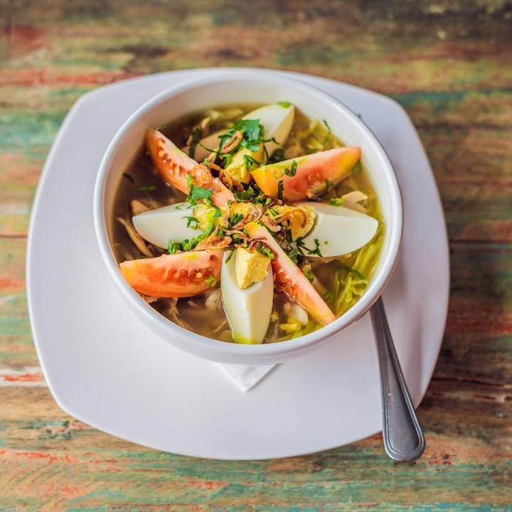
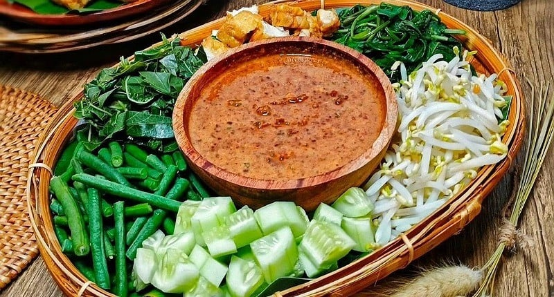

<html lang="en"></html>

<head>
    <meta charset="UTF-8">
    <meta http-equiv="X-UA-Compatible" content="IE=edge">
    <meta name="viewport" content="width=device-width, initial-scale=1.0">
    <title>Web Warung Tegal</title>
    <style>
        header,
        section,
        footer,
        aside,
        nav,
        article,
        figure,
        figcaption {
            display: block;
        }

        body {
            color: #666;
            background-color: #4d3a15;
            background-image: url("images/dark-wood.jpg");
            background-position: center;
            background-repeat: round;
            font-family: Georgia, 'Times New Roman', Times, serif;
            line-height: 1.4em;
            margin: 0px;
        }

        .wrapper {
            width: 940px;
            margin: 20px auto 20px auto;
            border: 2px solid #000;
            background-color: #fff;
            display: flex;
            flex-direction: column;
        }

        header {
            height: 160px;
            background-image: url("images/header.png");
        }

        h1 {
            margin: 0px;
            color: #fff;
        }

        nav,
        footer {
            clear: both;
            color: #fff;
            background-color: #aeaca8;
            height: 30px;
        }

        nav ul {
            margin: 0px;
            padding: 5px 0px 5px 30px;
        }

        nav li {
            display: inline;
            margin-right: 40px;
        }

        nav li a {
            color: #fff;
        }

        nav li a:hover,
        nav li a.current {
            color: #000;
        }

        section.courses {
            float: left;
            width: 659px;
            border-right: 1px solid #eee;
        }

        article {
            clear: both;
            overflow: auto;
            width: 100%;
        }

        hgroup {
            margin-top: 40px;
        }

        figure {
            float: left;
            width: 290px;
            height: 220px;
            padding: 5px;
            margin: 20px;
            border: 1px solid #eee;
        }

        figcaption {
            font-size: 90%;
            text-align: left;
        }

        aside {
            width: 230px;
            float: left;
            padding: 0px 0px 0px 20px;
        }

        aside section a {
            display: block;
            padding: 10px;
            border-bottom: 1px solid #eee;
        }

        aside section a:hover {
            color: #985d6a;
            background-color: #efefef;
        }

        a {
            color: #de6581;
            text-decoration: none;
        }

        h1,
        h2,
        h3 {
            font-weight: normal;
        }

        h2 {
            margin: 10px 0px 5px 0px;
            padding: 0px;
        }

        h3 {
            margin: 0px 0px 10px 0px;
            color: #de6581;
        }

        aside h2 {
            padding: 30px 0px 10px 0px;
            color: #de6581;
        }

        footer {
            font-size: 80%;
            padding: 7px 0px 0px 20px;
        }

        .banner {
            width: 100%;
        }

        .banner-head {
            display: flex;
            align-items: center;
            justify-content: center;
        }

        .banner-head h1 {
            z-index: 1;
            position: absolute;
            font-weight: bold;
        }

       
    </style>
</head>

<body>
    <div class="wrapper">
        <header>
            <div class="banner-head">
                
                <h1 style="color: white;">Warung Sunda</h1>
            </div>
            <nav>
                <ul>
                    <li><a href="umum.html" class="current">beranda</a></li>
                    <li><a href="daftar-masakan.html">daftar masakan</a></li>
                    <li><a href="tentang.html">tentang</a></li>
                    <li><a href="kontak.html">kontak</a></li>
                </ul>
            </nav>
        </header>
        <section class="courses">
            <iframe width="600" height="345" src="https://www.youtube.com/embed/mTPhFUQnpAU"
                title="YouTube video player" frameborder="0"
                allow="accelerometer; autoplay; clipboard-write; encrypted-media; gyroscope; picture-in-picture"
                style="margin: 20px;" allowfullscreen></iframe>
            <article>
                <figure>
                    
                    <figcaption>Soto Indonesia</figcaption>
                </figure>
                <hgroup>
                    <h2>Soto Ayam</h2>
                    <h3>Makanan Berkuah</h3>
                </hgroup>
                <p>Soto ayam adalah makanan khas Indonesia yang berupa sejenis sup ayam dengan kuah yang berwarna
                    kekuningan.</p>
            </article>
            <article>
                <figure>
                    
                    <figcaption>Pecel Indonesia</figcaption>
                </figure>
                <hgroup>
                    <h2>Masakan Pecel</h2>
                    <h3>Makanan dengan bumbu kacang</h3>
                </hgroup>
                <p>Pecel adalah makanan yang menggunakan bumbu sambal kacang sebagai bahan utamanya yang dicampur dengan
                    aneka jenis sayuran.</p>
            </article>
            <article>
                <figure>
                    
                    <figcaption>Sayur Sop</figcaption>
                </figure>
                <hgroup>
                    <h2>Sayur Sop</h2>
                    <h3>Makanan berkuah</h3>
                </hgroup>
                <p>Sayur Sop adalah adalah masakan berkuah dari kaldu yang dibuat dengan cara mendidihkan bahan berupa
                    daging atau ayam untuk membuat kuah kaldu, dan biasanya diberi bumbu serta bahan lainnya untuk
                    menambah rasa. </p>
            </article>
            <div style="border: 1px solid #eee; padding: 10px; float: right; margin: 20px"><a
                    href="daftar-masakan.html">Lihat masakan lainnya ></a>
            </div>
        </section>
        <aside>
            <section class="popular-recipes">
                <h2>Masakan Populer</h2>
                <a href="soto-ayam.html">Soto Ayam</a>
                <a href="pecel.html">Pecel</a>
                <a href="sayur-sop.html">Sayur Sop</a>
                <a href="sayur-bayam.html">Sayur Bayam</a>
            </section>
            <section class="contact-details">
                <h2>Kontak</h2>
                <p>Warung Tegal <br />di seluruh indonesia</p>
            </section>
            <section class="musik">
                <h2>Musik</h2>
                <p>Lagu neng akang</p>
                <audio controls="" autostart="true" style="width: 250px;">
                    <source src="wwd.mp3juice.blog - RUNTAH - AZMY Z  (Official Music Video).mp3" type="audio/mpeg">
                    Your browser does not support the audio element.
                </audio>
            </section>
        </aside>
        <footer>
            &copy; 2021 Warung Tegal
        </footer>
    </div>
</body>

</html>
